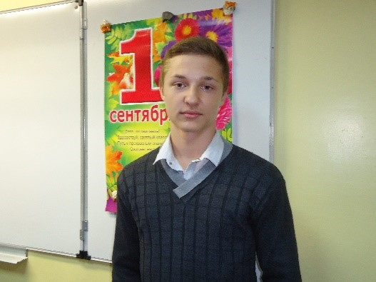
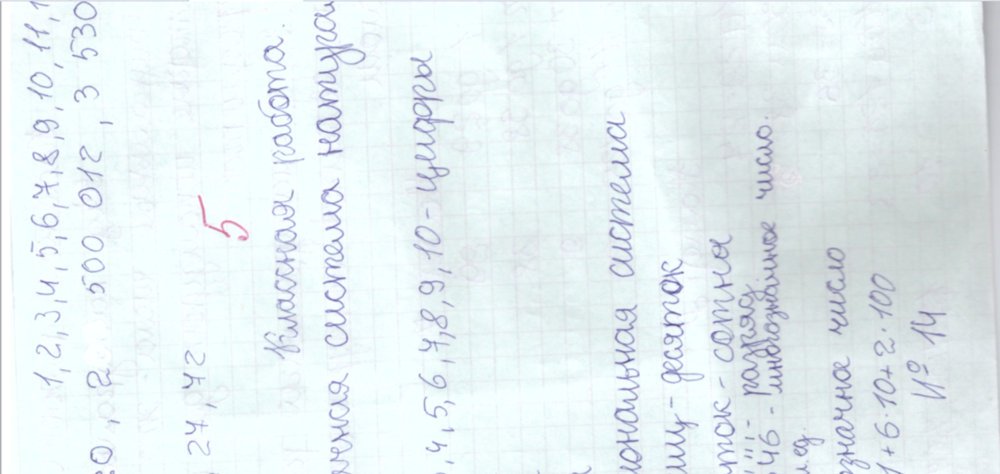
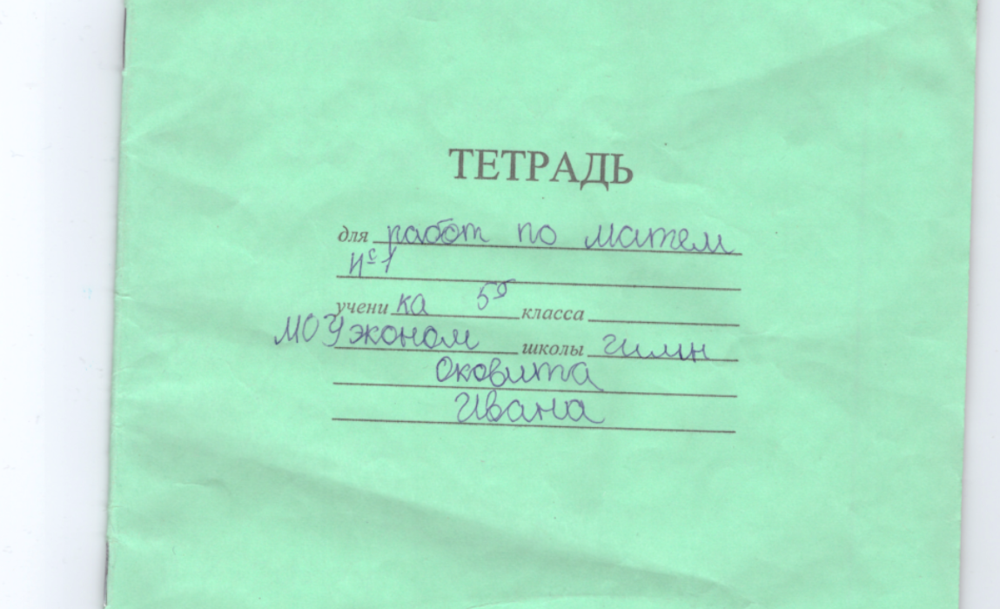
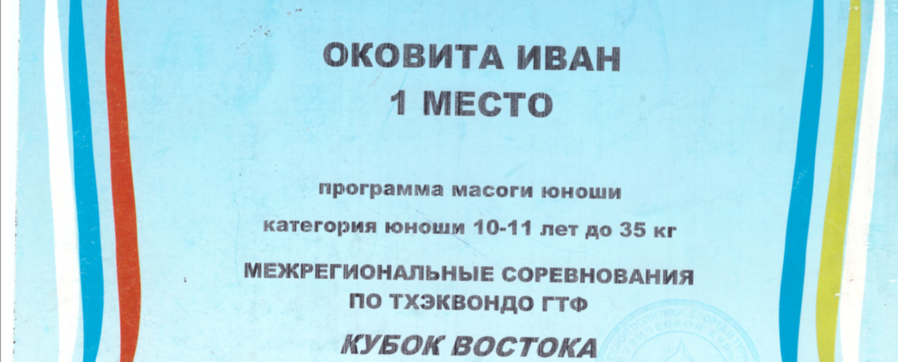

Наша гордость
В нашей школе учился Иван Александрович Оковита (выпуск 2015г.).
Иван родился в Хабаровске и был обычным школьником, как и многие из вас. С детства он не мечтал о великих подвигах, не стремился стать героем. Он просто жил своей жизнью, занимался тхэквондо, учился, играл в компьютер и мечтал о будущем. В его сердце всегда была любовь к Родине, но он не думал, что станет символом мужества и офицерской чести.
  
Аналитический склад ума и врождённая внимательность к деталям помогали ему в выполнении и планировании боевых задач, и аккуратном их исполнении. Его мудрость, сострадание, человеколюбие и внимательность к сослуживцам были отмечены каждым из его боевых товарищей. Любой приказ командования мл. л-т Оковита успешно выполнял с усердием, ответственностью и свойственной ему разумной инициативой.
20 сентября 2024 года в своём последнем бою Иван показал невероятную храбрость во время выполнения боевой задачи, проявил истинную силу духа, закрыв собою товарища от огня противника. Иван погиб в возрасте 25 лет, но оставил после себя светлую память о своём подвиге.
Награждён Орденом Мужества посмертно.